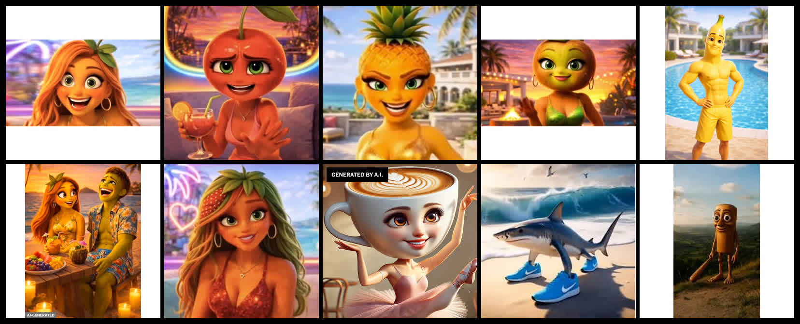
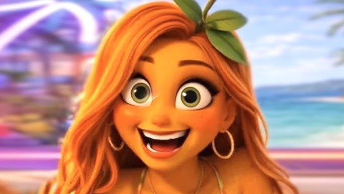
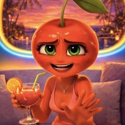

Story Lock
One-sentence plot: Stella Strawberry secretly met Mango Marco during last night's private villa audition, where he gave her half of a seed-heart necklace; today Marco enters holding Pina Pineapple's hand and denies knowing Stella, until Bella Blueberry exposes the matching necklace and Benny Banana accidentally reveals there is an audition tape.
Part 2 promise: open on the audition tape from 11:47 p.m. before adding any new mystery.
Clarity Rules
- Marco and Stella met last night, not in a vague past relationship.
- Pina believes Marco honestly entered with her.
- Stella has one proof object: the necklace.
- Bella catches one behavior clue: Marco touching his chain.
- Benny's tape slip creates the next episode.
Episode Settings
Video Format
Vertical 9:16, export at 1080x1920. Generate source clips at the highest vertical resolution your provider supports, then assemble in a 60-second timeline.
Clip Length
3-5 seconds per shot. Hard cuts, no dissolves. Keep the most interesting visual change between seconds 10 and 15 for retention.
Generation Order
Character stills first, ensemble reference second, image-to-video third, captions and necklace engraving last in edit.
Sound Design
Bright villa sting, sudden silence on "Nice to meet me?", low bass hit on "11:47 p.m.", then cut mid-motion for a replay loop.
Text Layer
Add captions and S + M - 11:47 PM in post. Do not ask the video model to bake text into the clip.
Reject Criteria
Reject clips where Stella or Marco's necklace disappears, Pina looks informed too early, or the characters change fruit shape between cuts.
Reference Photos
The uploaded fruit and object-character references are the target: glossy 3D, expressive eyes, readable silhouettes, human-like hands, jewelry, villa lighting, and consistent recurring cast design.



Continuity Bible
Use On Every Video Prompt
Vertical 9:16 premium 3D animated reality-show microdrama. Use the approved character references exactly. Humanoid fruit characters with clear fruit silhouettes, expressive eyes, eyebrows, mouths, human-like bodies and hands, detailed fruit texture, wardrobe, jewelry, tropical luxury villa at sunset, cinematic shallow depth of field, reality-TV push-in and reaction-cut energy.
Paste Into Every Job
Avoid flat mascot art, sticker style, realistic human faces, uncanny human skin, horror, gore, extra characters, inconsistent fruit heads, warped hands, melted jewelry, unreadable props, baked-in subtitles, logos, watermarks, TikTok UI, copied show branding, celebrity likeness, random text.
Character Reference Still Prompts
60-Second Script
Frames And Shot Prompts
Each frame card is one paid image-to-video job. Generate each shot as a 3-5 second clip from approved stills. Add captions and necklace text in edit, not inside generated video.
18-Second FYP Test Cut
- 0:00-0:03: Marco enters with Pina and denies knowing Stella.
- 0:03-0:07: Stella shows her matching necklace.
- 0:07-0:11: Bella catches Marco touching his hidden chain.
- 0:11-0:15: Bella flips Marco's necklace. Overlay:
S + M - 11:47 PM. - 0:15-0:18: Benny says, "Not the audition tape." Smash cut.
18-Second Trailer
Vertical 9:16 premium 3D animated fruit reality microdrama trailer. Use approved character references for Stella Strawberry, Mango Marco, Pina Pineapple, Bella Blueberry, and Benny Banana exactly. Five hard cuts: Marco enters holding Pina's hand and denies knowing Stella; Stella lifts her matching seed-heart necklace; Bella notices Marco touching his hidden chain; Bella flips Marco's necklace toward camera; Benny Banana panics and tries to cut the cameras. Sunset tropical villa pool, glossy humanoid fruit characters, expressive faces and hands, dramatic reality-TV push-ins, clean edited overlay for S + M - 11:47 PM, no baked-in captions, no logos, no watermarks.
Audio, Caption, Lore
| Original audio cue | Bright villa sting, silence on "Nice to meet me?", bass hit on "11:47 p.m." |
|---|---|
| Sound title | Stella's Theme - Nice To Meet Me |
| Search caption | Fruit villa drama where Mango Marco denies knowing Stella, but the necklace from last night's audition exposes him. |
| Comment bait | Did Marco betray Stella, or did Benny set them both up? |
| Lore comment | Look at Marco's hand before Bella says anything. He touches the necklace like he already knows it will ruin him. |
| Loop note | Cut Benny's "Stella, don't" directly back to Marco saying he has never met Stella. |
Episode 2 Opening Answer
Security footage from 11:47 p.m. shows Marco placing the necklace on Stella and saying, "If we enter together, they will know we passed the chemistry test." Benny steps into frame and says, "No. Tomorrow you enter with Pina. If Stella reacts, we keep the tape."
Episode 2 Cliffhanger
Pina watches the tape and whispers, "Then why is my name on the contract too?"
Render Checklist
- Generate character stills first, then image-to-video.
- Keep every shot under 5 seconds unless it is an active reaction.
- Add captions, timestamps, and necklace engraving in edit.
- Compare fruit texture, eyes, hands, jewelry, and villa lighting to the reference pack.
- Reject any shot where Marco's necklace disappears.
- The final second must ask one question: what is on the audition tape?